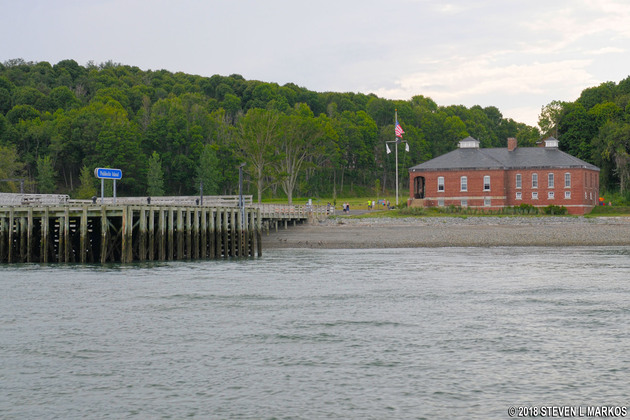
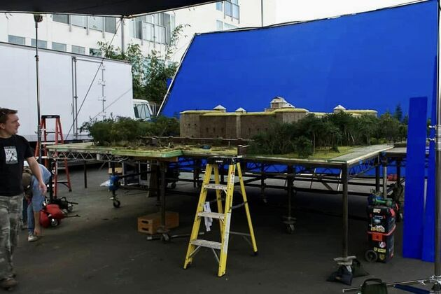

"Shutter Island," directed by Martin Scorsese and based on Dennis Lehane's novel, is a psychological thriller that delves into the depths of the human mind. The story is set in 1954 and follows U.S. Marshal Teddy Daniels (Leonardo DiCaprio) and his partner Chuck Aule (Mark Ruffalo) as they investigate the mysterious disappearance of a patient from Ashecliffe Hospital, a mental institution on Shutter Island.
The film begins with Teddy and Chuck arriving on the remote and eerie Shutter Island to investigate the disappearance of Rachel Solando, a patient who vanished from a locked room. As they delve deeper into the investigation, they encounter strange and unsettling occurrences, leading Teddy to suspect that the hospital's staff, led by Dr. John Cawley (Ben Kingsley), is hiding something sinister.
Teddy, haunted by traumatic memories of his experiences in World War II and the death of his wife Dolores (Michelle Williams), begins to unravel as the investigation progresses. The film masterfully blends elements of noir, horror, and psychological drama, creating a gripping and disorienting narrative that keeps the audience guessing until the very end.
The cinematography by Robert Richardson is hauntingly beautiful, capturing the foreboding atmosphere of Shutter Island. The island's rugged landscapes, stormy weather, and the imposing structure of the mental institution all contribute to the film's tense and claustrophobic mood. The use of lighting and color enhances the unsettling and surreal quality of the narrative, making the audience question the reality of what they are seeing.
"Shutter Island" explores themes of trauma, mental illness, and the fragile nature of reality. The film delves into the psychological effects of war and personal loss, examining how these experiences shape and distort Teddy's perception of reality. The narrative structure, with its twists and turns, reflects the complexity of the human mind and the ways in which it can create and conceal truths.
The film also raises questions about the ethics of psychiatric treatment and the thin line between sanity and insanity. As Teddy navigates the treacherous landscape of Shutter Island, the audience is drawn into his fragmented psyche, experiencing his confusion and fear firsthand.
Peddocks Island, Massachusetts: Many of the island scenes were shot on Peddocks Island in Boston Harbor, providing the isolated and desolate setting required for Shutter Island.
One of the fascinating aspects of the production of "Shutter Island" is the use of miniature effects to create some of the film’s most iconic scenes. The filmmakers employed miniatures to depict certain external shots of the Ashecliffe Hospital and the stormy sea surrounding Shutter Island. This technique allowed for greater control over the environment and weather conditions, ensuring a consistent and haunting atmosphere throughout the film.
The miniatures were meticulously crafted to replicate the hospital's imposing structure and the rugged terrain of the island. These models were then filmed in a controlled studio environment, with lighting and camera angles carefully adjusted to match the live-action footage. This approach not only provided a high level of detail but also contributed to the film's overall sense of surrealism and disorientation.
"Shutter Island" is a masterful psychological thriller that showcases Martin Scorsese's directorial prowess and Leonardo DiCaprio's exceptional acting skills. The film's intricate plot, atmospheric visuals, and compelling performances create a captivating and immersive experience. Its exploration of deep psychological themes and the nature of reality makes it a thought-provoking and memorable film.
Overall, "Shutter Island" is a must-watch for fans of psychological thrillers and anyone who appreciates a film that challenges the mind and keeps viewers on the edge of their seats. Its haunting narrative and stunning execution make it a standout in Scorsese's illustrious career and a significant contribution to the genre.